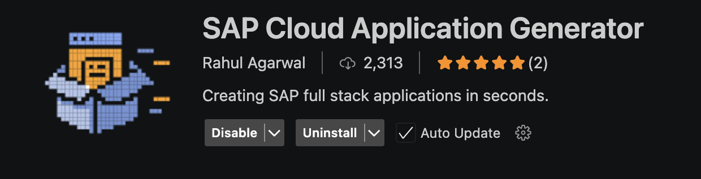
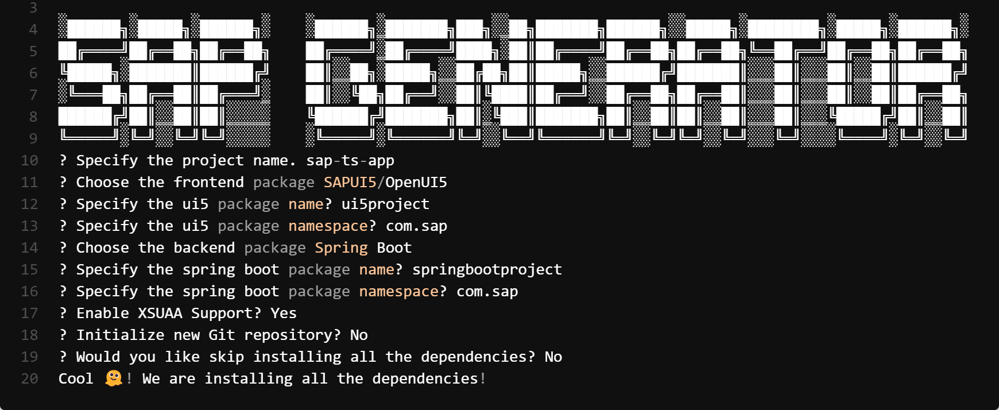

SAP Cloud Application Generator (SAP CAG) is available as both a CLI tool and a VS Code extension for quickly bootstrapping full-stack SAP BTP applications. With a single command, it creates UI5 or React frontends and Node.js or Spring Boot backends along with all necessary config files and deployment descriptors. It comes ready-made for common SAP services and can be extended via plugins or hooks. This reduces project setup time from days to minutes.
Honestly, just install the extension and use it. It is pretty self explanatory. You can find the extension in the marketplace or here. The extension is available for free and can be installed directly from the Visual Studio Code Marketplace. Once installed, you can access it from the command palette or the sidebar.
Follow the below instructions to create a new project.
Install Extension
> SAP Cloud Applications: Generate
A zero-config CLI tool to scaffold full-stack SAP Business Technology Platform (BTP) applications in minutes. Supports UI5 or React frontends and Node.js or Spring Boot backends, with ready-to-use deployment descriptors.
Use the command line to create a new project.
npm create @ragarwal06/sap-fs-app@latest
yarn create @ragarwal06/sap-fs-app@latest
pnpm create @ragarwal06/sap-fs-app@latest
npx @ragarwal06/create-sap-fs-app@latest